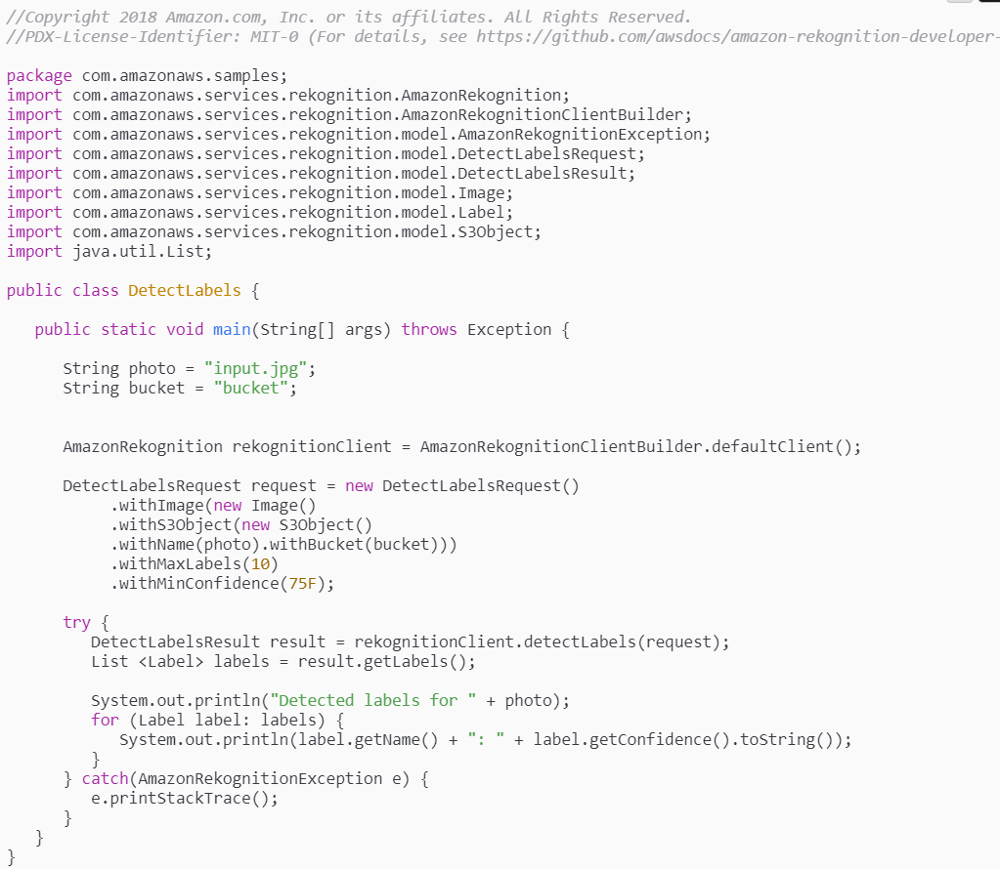

Amazon Web Services (AWS)
Jak to chodí u Amazonů
Martin Polák
Představení AWS
Cloudové aplikační prostředí.
- Výpočetní prostředky
- Úložiště
- Databáze
- Nástroje pro vývojáře
- ...
...PROSTĚ...
Jak šel čas...
- 2002 Amazon.com Web Service
SOAP rozhraní pro Amazon katalog - Březen 2006 - veřejný start AWS
Služby Simple Storage Service (S3), Elastic Compute Cloud (EC2) a Simple Queue Service (SQS) - ...
- 2018 Největší public cloud
Příjmy za rok 2018 - více než 25 mld. $
Čísla se u různých zdrojů mírně liší.
...dnes
- Více než 90 služeb
Například i pro vývoj her, AR / VR nebo dokonce ovládaní družic - 21 datacenter po celém světě
S miliony fyzických serverů - Vývoj vlastního HW
Servery s menší spotřebou, masivní disková pole (11 PB), routery (128 portů, 3.2 Tbit propustnost)
Vybrané služby
Amazon EC2
Virtuální servery s Linuxem nebo Windows.
Velký výběr HW konfigurací (vCPU od 1 do 128 jader, paměť od 0,5 GB po 4 TB).
Více možností platby (za hodinu, rok, několik let).
AWS Lambda
Umožňuje spouštět kód, aniž byste museli řešit servery a věci okolo.
Platíte pouze za čas, kdy kód běží.
Může reagovat na události (HTTP request, upload souboru, zpráva,...).
Amazon S3 (Simple Storage Service)
Úložiště dat, (prakticky) neomezená kapacita, jeden objekt 5TB.
Různé způsoby uložení dat (Glacier,...).
Lze použít pro hosting statických dat.
Query in Place, Events,...
...je jich opravdu hodně...
databáze (Aurora, DynamoDB, RDS,...)
autentizace, autorizace (IAM, Cognito,...)
vývoj her (Lumberyard,...)
machine learning, IoT, robotika
...
Teď přijde kouzelník a...
...něco předvede :)
Rekognition API
A co vesmír?

A když budete zlobit, tak...